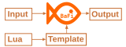

BaFi
Convert JSON, XML, CSV, YAML, BSON and MT940 into any text format with templates.
bafi reads structured data from a file or a pipe and renders it through a template into whatever text the next system needs: JSON, XML, CSV, HTML, SQL, a SOAP request. One small program without dependencies for Windows, macOS and Linux.
Install · Recipes · Function reference · Troubleshooting · GitHub

What do you want to do?
| I want to... | Recipe |
|---|---|
| turn XML into JSON | Convert XML to JSON |
| turn JSON (e.g. a REST response) into XML | Convert JSON to XML |
| turn a CSV export into JSON | Convert CSV to JSON |
| get JSON or XML into Excel | Convert JSON to CSV · XML to CSV |
| call a SOAP service with data from a REST API | REST response to SOAP request |
| give a SOAP response to a REST client | SOAP response to JSON |
| produce an HTML report | HTML report from JSON |
| load a CSV into a database | SQL INSERT statements from CSV |
| process MT940 bank statements | MT940 to CSV |
| combine several files into one document | Merge several files |
| convert YAML, JSON, TOON, BSON | Convert between formats |
In thirty seconds
{"users": [{"name": "Alice", "city": "Prague"}, {"name": "Bob", "city": "Brno"}]}
Convert the whole document with one function:
bafi -i users.json -t '?{{toYAML .}}'
users:
- city: Prague
name: Alice
- city: Brno
name: Bob
Or describe the output yourself. Text outside {{ }} is copied as it is; range repeats a block for
every item:
bafi -i users.json -t '?{{range .users}}{{.name}} lives in {{upper .city}}{{"\n"}}{{end}}'
Alice lives in PRAGUE
Bob lives in BRNO
Works in pipes too: curl -fs https://example.com/api/users | bafi -f json -t report.tmpl -o report.html.
Next: the template guide and the command line.
Try it online
Runs entirely in your browser; nothing is uploaded. The demo (a few megabytes) loads on the first click.
Input format:
Why bafi
- Many inputs: JSON, BSON, YAML, CSV (any delimiter), XML and MT940 bank statements, from a file or standard input.
- Any output: the template decides. HTML, SQL, shell scripts, SOAP envelopes, fixed-width text.
- Pipes: read from
curl, write to the next command. Bridges REST and SOAP services, databases and spreadsheets. - Several inputs at once: merge files of different formats into one output.
- Helpful errors: problems are reported with the file, line and column, and a hint how to fix them.
- Extensible: 60+ template functions, plus your own in Lua.
- TOON and OpenAI: encode data compactly for LLM prompts, or ask OpenAI about your data (experimental).


If you like this app you can buy me a coffee ;)